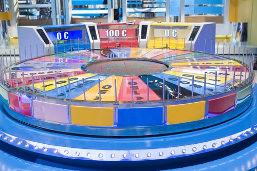

Las máquinas para realizar sorteos pueden ser muy variadas. Por ejemplo, tenemos el clásico bingo casero que consta de un bombo en el que se introducen una serie de bolas numeradas, y del que se extraen, en orden, todas aquellas bolas que son necesarias hasta que se completa el cartón de uno de los jugadores.
No obstante, construir uno de estos dispositivos se nos antoja bastante complicado.
Como el accionamiento tenía que ser eléctrico, había que instalarle un pequeño motor. Pero todos sabemos que un motor de los que habitualmente montamos en nuestras maquetas tienen muy poca "fuerza" (bueno, en realidad nuestro profesor dice que lo que tiene es poca potencia).
Investigamos algo más, y encontramos que, para aumentar la fuerza que tenga el motor debe instalarse un sistema que reduzca la velocidad de giro del motor. Esto es lo que se conoce como "sistema reductor de velocidad", y está comprobado que, a costa de bajar la velocidad del motor, conseguimos aumentar la fuerza disponible.